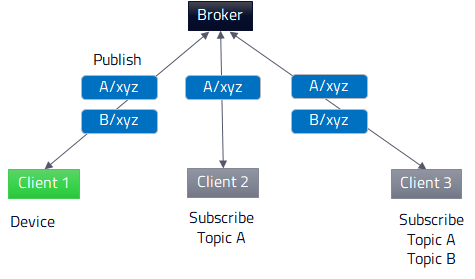

Qt MQTT Overview
Qt MQTT enables you to create applications and devices that can communicate over the MQ telemetry transport (MQTT) protocol. It fully complies to the MQTT protocol specification.
Publish and Subscribe
MQTT is a machine-to-machine connectivity protocol that operates on the publish-and-subscribe model. An MQTT client is a program or device that uses MQTT to create a network connection to an MQTT server, also called a broker. Once a connection is created, the client can send messages to the broker. The other clients can subscribe to notifications on particular topics sent by the client.

For example, if Client 2 subscribes to messages on Topic A, it receives a notification when Client 1 sends a message on that topic. If Client 3 subscribes to Topic A and Topic B, it receives notifications about messages on both those topics.
Qt MQTT is a client solution that does not include a broker. It is especially suitable for developing telemetry applications for embedded devices. However, Qt MQTT has no external dependencies, and therefore the implemented clients can be run on all supported Qt platforms.
Topics
Topics are stored in a hierarchical tree structure. The standard does not specify how the tree should be designed, nor does it provide predefined hierarchy sets. You can freely design the hierarchy as required by your project. The following is an example of a topic hierarchy, where active means all active sensors, whereas house and garage are individual sensors:
sensors/active sensors/house/temperature sensors/house/bedroom/light sensors/house/livingroom/light sensors/garage/temperature sensors/garage/light
Subscribing to Topics Using Wildcards
When clients subscribe to topics, they can use the hash mark (#) and plus sign (+) as wildcards. The hash mark indicates that the client wants to receive notifications on all messages on a topic and its subtopics. For example, if a client subscribes to sensors/house/#, it receives all messages on the house sensor.
The plus sign indicates that a branch on the tree can be skipped over when looking for a matching subtopic. For example, if a client subscribes to sensors/+/temperature, it receives messages on temperature regardless of which sensor sent them. You can use multiple plus signs to skip over multiple branches. For example, house/+/+/temperature could be used to receive messages on the temperature of all rooms in all apartments in a house.
Shared Subscriptions
Shared subscriptions describe a pool of subscribers to one topic filter. Instead of all subscribers receiving a message, only one subscriber receives it. This enables load balancing on multiple clients. The format of a shared subscription is:
$share/{sharename}/{topicfilter}
For example, if Client 1 and Client 2 should share a subscription to the topic sensors/house/temperature, the topic filter to subscribe to is:
$share/poolAB/sensors/house/temperature
It is not defined in which order messages are distributed by the server. This is a server specific option.
To identify whether a server supports shared subscriptions, see also QMqttServerConnectionProperties::sharedSubscriptionSupported().
Topic Aliases
Structuring topics in a tree helps to separate data channels and provide a logical order of information. However, this can lead to very long topic names being used during the publication of messages, hence increasing the size of each message.
The MQTT 5.0 protocol version introduced topic aliases to circumvent this. Instead of the topic string, an integer value is sent. To create an initial mapping between the client and the server, both the topic string and the alias need to be part of a message. Thereafter, only the ID with an empty topic is used.
This mapping can be changed at any time by using a topic alias with another topic string. Note that this mapping does not necessarily apply to other connections, such as connections from the server to other clients. Each connection needs to create this mapping manually.
Qt MQTT provides an automated mechanism to help reduce data rates. After QMqttClient creates a connection, information about topic aliases supported by the server is stored. Subsequently, topic aliases are used in the order the messages are published, until all available aliases are in use. A user is always able to modify this mapping by using QMqttPublishProperties::setTopicAlias() during publication.
When QMqttClient subscribes to a topic, the server can use topic aliases as well, depending on the QMqttConnectionProperties::maximumTopicAlias() value set by the client. The client automatically maps topic aliases and transparently forwards messages to the user including the full topic string.
Security
The connections between the clients and the broker are secured by an in-built authentication system that uses user names and passwords. Messages are encrypted by using SSL/TLS at the transport layer. The standardized port number for encrypted MQTT messages is 8883.
Quality of Service
The following quality of service (QoS) levels for messages are defined:
- At most once (0) means that messages are delivered according to the best efforts of the operating environment, and therefore message loss can occur. This level could be used, for example, with ambient sensor data where it does not matter if an individual reading is lost as the next one will be published soon after.
- At least once (1) means that messages are assured to arrive but duplicates can occur.
- Exactly once (2) means that messages are assured to arrive exactly once. This level could be used, for example, with billing systems where duplicate or lost messages could lead to incorrect charges being applied.
Will Messages
A Will Message, also called testament, is a message sent from a client and stored at the broker location. If the connection between the client and broker breaks in an unexpected way, the Will Message will be forwarded to any subscriber of the Will Topic.
Will Messages must be specified at the connecting stage. Hence, it is mandatory to set them before invoking QMqttClient::connectToHost() or QMqttClient::connectToHostEncrypted(). A Will Message has all the properties of a regular message, as well as a Will Topic, QoS level, retained flag, and message payload.
If the client disconnects from the broker in a regular fashion by calling QMqttClient::disconnectFromHost(), the broker will discard the Will Message. If needed, the client is responsible for sending all the required messages before disconnecting.
Retained Messages
Retained messages are stored on the broker side. As future clients connect, they will receive such messages. A typical use case is to store the current health status of the publisher in a retained message. Subscribers will instantly receive a message about the status.
A broker can only store the last retained message sent for a specified topic. If a client publishes a retained message with the QoS level zero, any previously retained message for its topic at the broker must be discarded. The broker should store the last message, but may also discard it. This depends on the implementation of the broker.